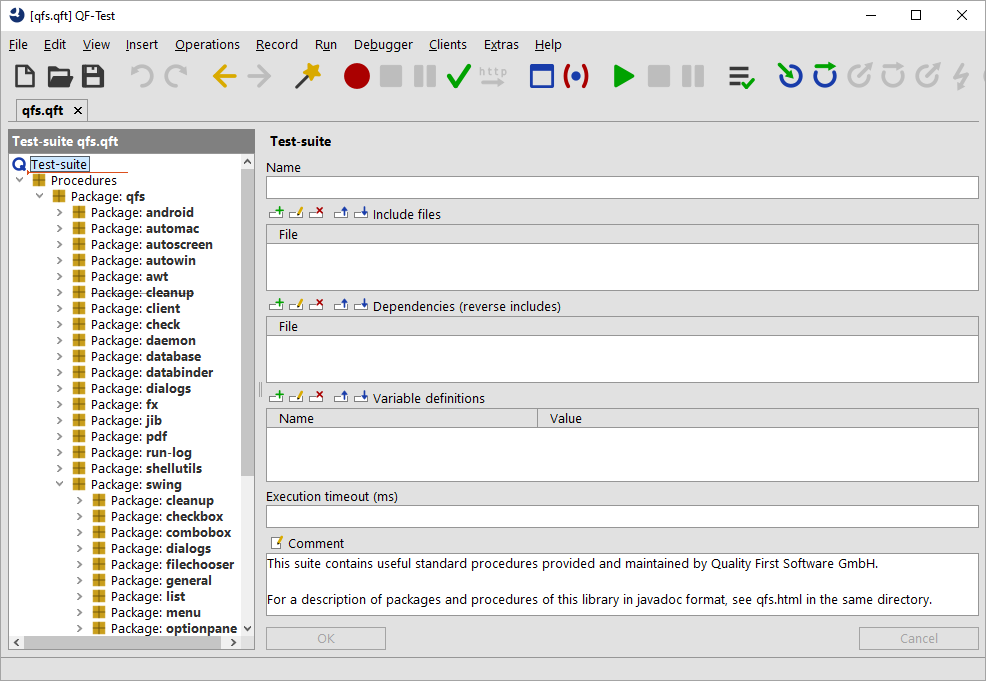

| Version 6.0.3 |
In addition to inserting procedure calls from the Standard Library, it also can be helpful to sometimes have a look how certain things have been implemented.
qfs.qft, which is
located in the qftest-6.0.3/include directory
of your QF-Test installation.
|
|  | ||
|
| Figure 25.1: The Standard Library | ||
You can see there is one main package qfs that contains further specific
packages. The qfs package helps to easily identify the packages belonging to
the standard library.
The specific packages cover very different areas of utility procedures described in more detail further below.
Note
Within nearly all of the procedures of this library, you'll notice that the
variable $(client) is referenced. This is the standard mechanism for creating
independence from a specific SUT. Here, the library assumes that the
test-suite which uses the library will set a value for $(client) prior
to using any procedures.
| Last update: 9/6/2022 Copyright © 2002-2022 Quality First Software GmbH |